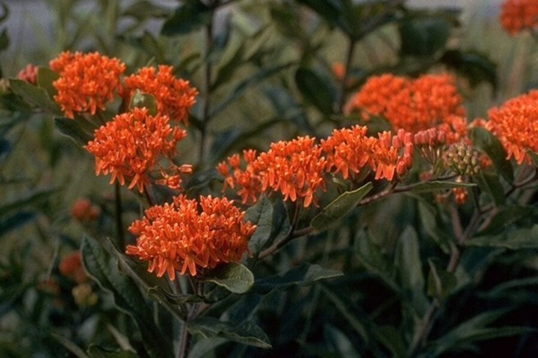

God has blessed his children with some amazing and incredible gifts, and flowers are one of them. Flowers are the most natural and precious beauties of the world. Their beauty is not only praised out in nature, however, but they are also often given as admiration, a token of love, expression of feelings celebration, among other reasons. Flowers can express emotions which sometimes we fail to express through our words. Flowers are commonly a part of funerals, birthdays, weddings and many other occasions. With enormous varieties of blooms to choose from, but have you ever thought about giving the costliest flower to your loved ones? Do you know the most expensive flowers in the world? If you have no idea, then keep reading to know what the 9 most expensive flowers are on the earth.
I feel like Colin Firth today, but not because I’ve won any awards. In his acceptance speech at the Oscars recently, Firth admitted to “stirrings” which could, at any moment, set his legs to dancing. For my entire life, the road to New Orleans has made me want to second line all the way, so I know those stirrings. I’ll be dancing down the river this week to visit with gardeners and photograph their gardens, and, yes, do a little parading.